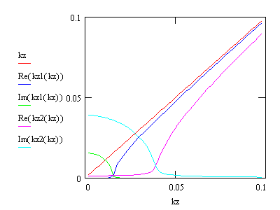

Wave Vector
Boundary Conditions at the Interface between two Media
Detlef
Smilgies
Let us consider a wave
travelling
through medium 1 and hitting a plane
interface with medium 2. The most general situation will be that part
of
the incident wave is reflected and part of it refracted into medium 2.
The solutions of the wave equation in both media are subject to
boundary
conditions at the interface. First of all, the frequencies of the three
waves must be equal on either side of the interface:
ω = ω'
The dispersion
relation for plane
waves w2 = c2 k2
implies for the wave
vectors:
k'2
= n2 k2
The next condition is
that the
wave vector components parallel to the interface
are equal - only this way we can have continuity of the fields across
the
interface:
k'||
= k||
From these two
boundary conditions
we can calculate the relation between the z-components of the wave
vector:
k'z2
= k'2
- k'||2
= n2 k2
- k||2
= n2 k2
-
(k2
- kz2)
= (n2-1) k2
+ kz2
In the introductory
chapter we had
already seen that the real part of the
refractive
index for x-rays is slightly less than 1
n = 1 - δ+ i β
with d on the order of 10-5.
The
imaginary part b takes
account of the
absorption.
The Figure shows the
z-component
of the k vector: kz in vacuum, kz1 for
a low-Z material (Si), kz2 for a high-Z material (Au), all at a photon
energy of 10 keV corresponding to k = 5 A-1.

If the right hand
side turns
negative of the equation for k'z,
the wave cannot propagate inside the medium any more, and we have
external
total reflection. Ignoring b, we get
for
the
critical wave vector using k = ||k|| :
Re(kz,c)
= ( (1-n2) k2 )0.5
= ( 2δ-(δ2-β2)
)0.5 k
For the critical
angle ac we
re-derive
the well-known result from Snell's formula:
αc
= kz,c
/ k = (2δ)0.5
Suggested reading, e.g. in an
electrodynamics text book:
- review of the
reflection law: k||
|| kr||
- review of
Snell's law for
the refracted wave
Snell's Law
In x-ray scattering a
different angle convention is used compared to visible optics: while in
visible optics angles are referenced with respect to the surface
normal, in x-ray scattering angles are given relative to a reference
plane, which can be the surface plane or a Bragg plane. In the first
case the optical and the x-ray angular values simply add up to p/2.
Hence Snell's law for the angle definition in x-ray scattering is
written:
cos(α) = n
cos(α')
At total external
reflection, a' becomes 0,
and we get for the critical angle
cos(αc)
= n
Both numbers are
close to 1, and expansion yields
1
- αc2
/ 2
= 1 - δ
with the well-known
result from above.
Wave vector as a function of
scattering angles
Our basic expression
k'z2
= (n2-1)
k2
+ kz2
can be further
rewritten in terms of the scattering angles:
k'z2
= k2
(n2-1 + kz2/k2)
= k2
{n2-1 + sin2(α)} = k2
{n2-1 + sin2(α)} = k2
{n2- cos2(α)} = k2
{cos2(αc)-
cos2(α)} = k2
{sin2(α)
- sin2(αc)} using cos2(x)=1-sin2(x)
for the final step
This way the wave
vector inside the film can be related to the wave vector outside the
film. Note if a becomes
smaller than ac the wavevector of the
scattered wave becomes imaginary - only an evanescent wave travelling
parallel to the surface can be inside the film. The scattering inside
the film is thus described by the wave vectors of trhe incident and
scattered waves inside the film. This refractive correction is
important for small qz values.